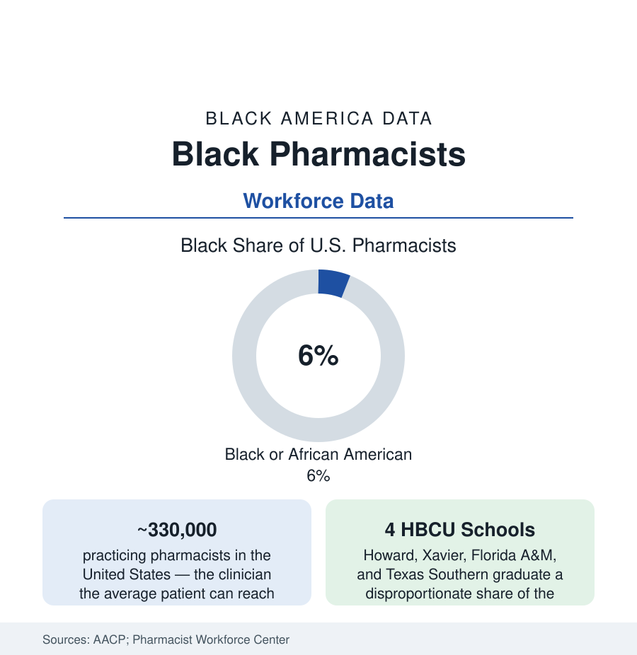

Black Employment
Black Pharmacists: The Most Accessible Clinicians, Counted
Black pharmacists are roughly 6% of the profession — trained disproportionately at four HBCU schools — staffing the counters the health system leans on most. The workforce data.

The pharmacist is the healthcare system's walk-in door — no appointment, no copay for counsel, a clinician on every retail corner — and Black pharmacists hold roughly six percent of the profession's licenses in the workforce surveys, trained through a pipeline with one of the HBCU file's most concentrated signatures: four historically Black pharmacy schools have produced a large share of every Black pharmacist practicing today. The ownership tier had its article; this is the workforce — the staff pharmacists of the chains, hospitals, and clinics whose labor the system's access statistics quietly presume. This article counts them.
The Pipeline: Xavier and the HBCU Pharmacy Belt
The AACP enrollment data draw the funnel: Black students at roughly seven to eight percent of PharmD enrollments in the recent classes — above the profession's practicing share, the slow arithmetic of generational replacement — concentrated with unusual intensity: Xavier University of Louisiana's College of Pharmacy (the nation's top producer of Black pharmacists for decades in the degree data, its graduates stocking the Gulf South's counters), Howard, Florida A&M, and Texas Southern together graduating a share of Black PharmDs that the four schools' size cannot explain except by mission. The profession's history runs through them: the segregated era's Black pharmacists (educated at these schools because the state flagships barred them) built the ownership tier of the previous article; the integrated era's graduates distributed across the chains and health systems. The workforce's demographic sequel is the faculty and preceptor tier (the clinical rotation sites where students train — the community's pharmacies serving as the profession's classrooms in the placement data) and the residency funnel (the postgraduate hospital residencies, whose match data by race the organizations have only recently begun to publish — the specialty tier's gate, watched).
Where They Practice: Chains, Hospitals, and the Counter's Economics
The workforce center's surveys distribute the profession: community practice (the chains the largest employers — their pharmacist workforces the most diverse tier in the setting data, their staffing-ratio and workload crises the profession's loudest current file, measured in the national surveys' burnout and error-environment items), hospital and health-system practice (the clinical specialists — oncology, critical care, infectious disease — the residency-gated tier), ambulatory and clinic practice (the growing provider-status frontier: pharmacists managing hypertension, diabetes, and anticoagulation under collaborative agreements — the chronic-disease file's workforce deployed at last, with the Black clinical pharmacists of the community clinics the model's frequent face), and the industry/government tier (the FDA, the manufacturers, the PBMs themselves). The pay data show pharmacy's historically compressed professional wages (the median in the BLS data well into six figures) with the within-profession gaps by race present but narrower than most professions in this section — the union and chain pay-scale structures doing quiet work — while the leadership tier (directors of pharmacy, chain executives, deans) thins in the accustomed slope, the deanships including a notable HBCU-anchored cohort.
The Practice Difference and the Profession's Strains
The services research documents what the counter means in Black communities specifically: the pharmacist as the medication-adherence infrastructure (the synchronization, blister-pack, and delivery programs of the independent article — replicated in the chain setting by the pharmacists who know the neighborhood), the vaccine era's proof (pharmacy-delivered immunization's scale — the profession administering the majority of COVID doses — with the community-pharmacy access data showing the counters' reach into the neighborhoods the mass sites missed), the screening and testing frontier (the point-of-care and prescribing authorities expanding state by state in the legislative record), and the trust surveys (pharmacists perennially among the most trusted professions in the Gallup honesty ratings — a trust the community's own pharmacists convert into the health system's most functional front door). The strains are the profession's shared ones, distributed on the usual gradient: the workload and staffing crisis (the walkouts and survey alarms of the recent years concentrated in the chain tier where Black pharmacists disproportionately staff), the pharmacy-school enrollment cliff (applications down nationally — the pipeline's next decade thinner for everyone, the HBCU programs' counts watched as the leading indicator of this article's next census), and the ownership escape narrowing (the previous article's economics closing the historical ladder from staff counter to owned store).
Reading the Pharmacist Data
Six percent of the profession, a third of its moral authority in the neighborhoods this atlas maps, and a pipeline that runs through four schools in New Orleans, Washington, Tallahassee, and Houston: the pharmacist file is the workforce section's study in concentration — of training, of trust, of the daily unglamorous labor of keeping a medicated nation adherent. The counter is open late. The data say who is standing behind it.
More in Black Employment
The Black Unemployment Rate: The Two-to-One Pattern
Black unemployment runs at roughly twice the White rate — 5.5 percent against 3.3 percent in annual averages — a ratio stable across five decades of federal data. How it is measured and why it persists.
Black Median Weekly Earnings: The 80-Cent Ratio
Black full-time workers earn a median of about $900 a week — roughly 80 cents for every dollar White workers earn. The BLS earnings data by group, gender, and occupation.
Black Labor Force Participation: Working at National Rates
Black labor force participation runs at roughly the national rate — and Black women participate at higher rates than White women. The BLS participation data.
Source: American Pharmacists Association and National Pharmacist Workforce Center; American Association of Colleges of Pharmacy; U.S. Bureau of Labor Statistics; National Pharmaceutical Association.